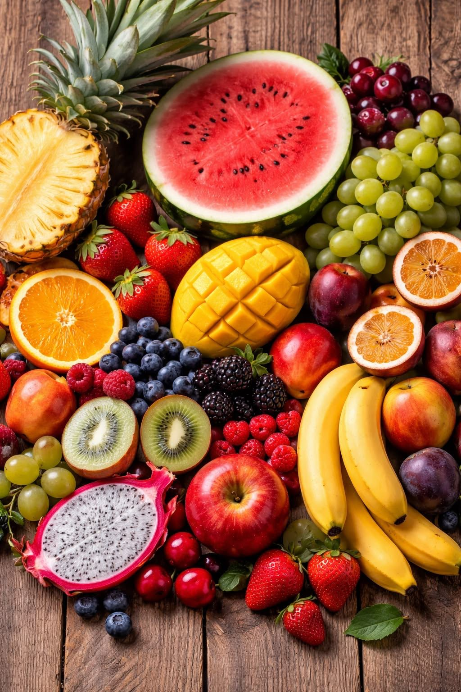
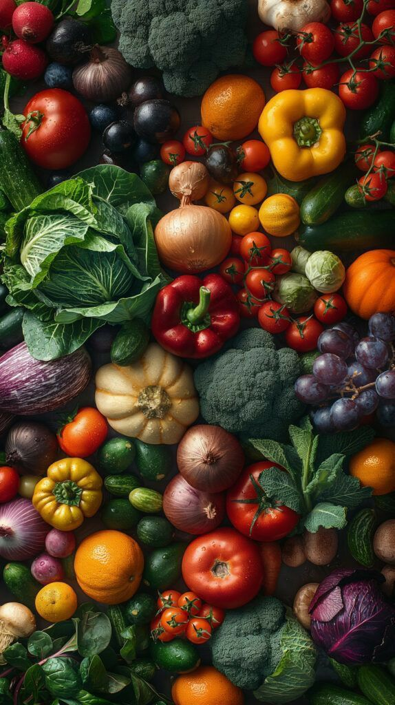
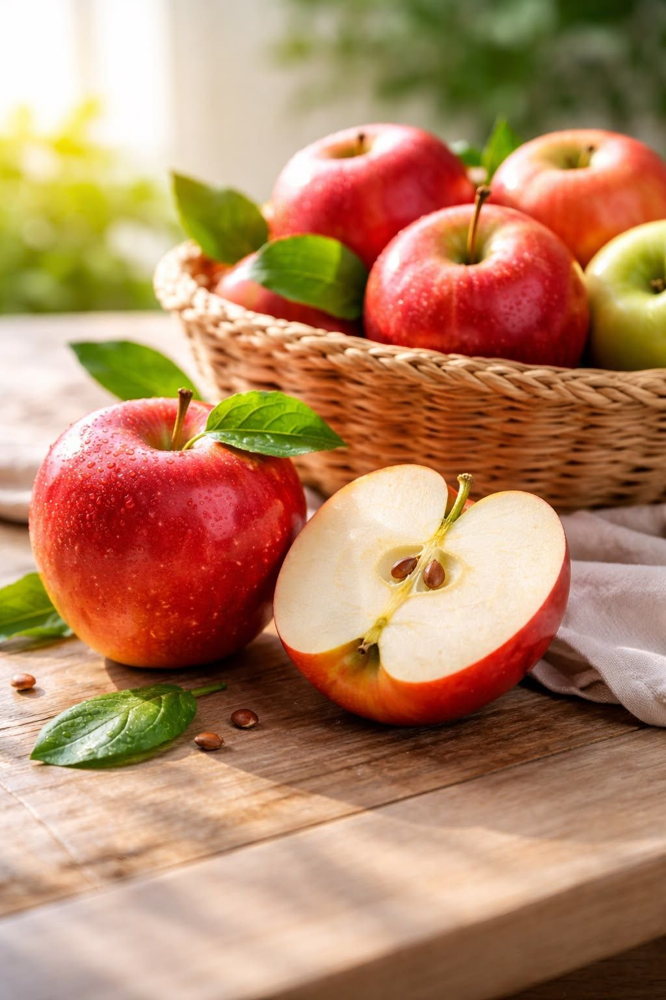
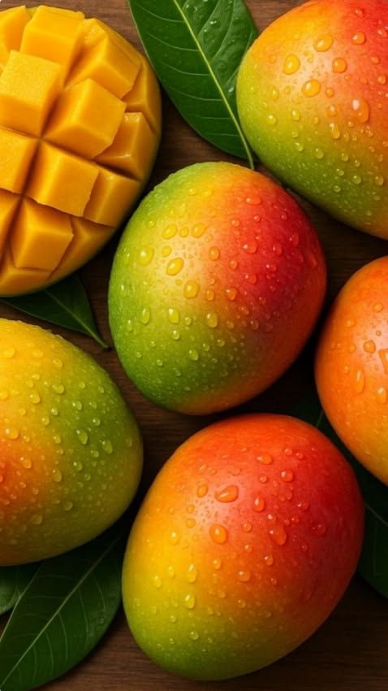
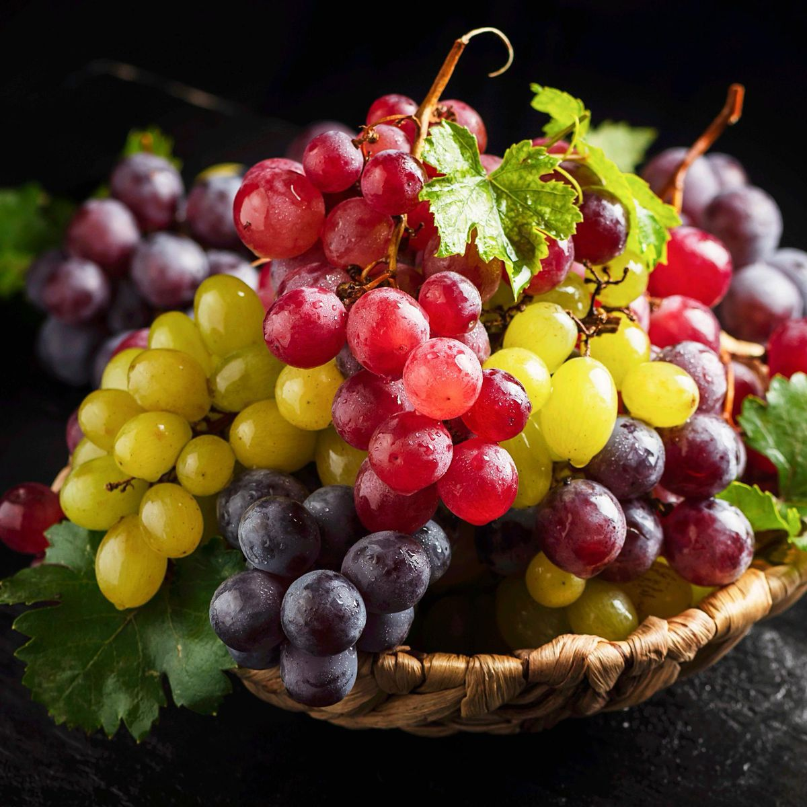
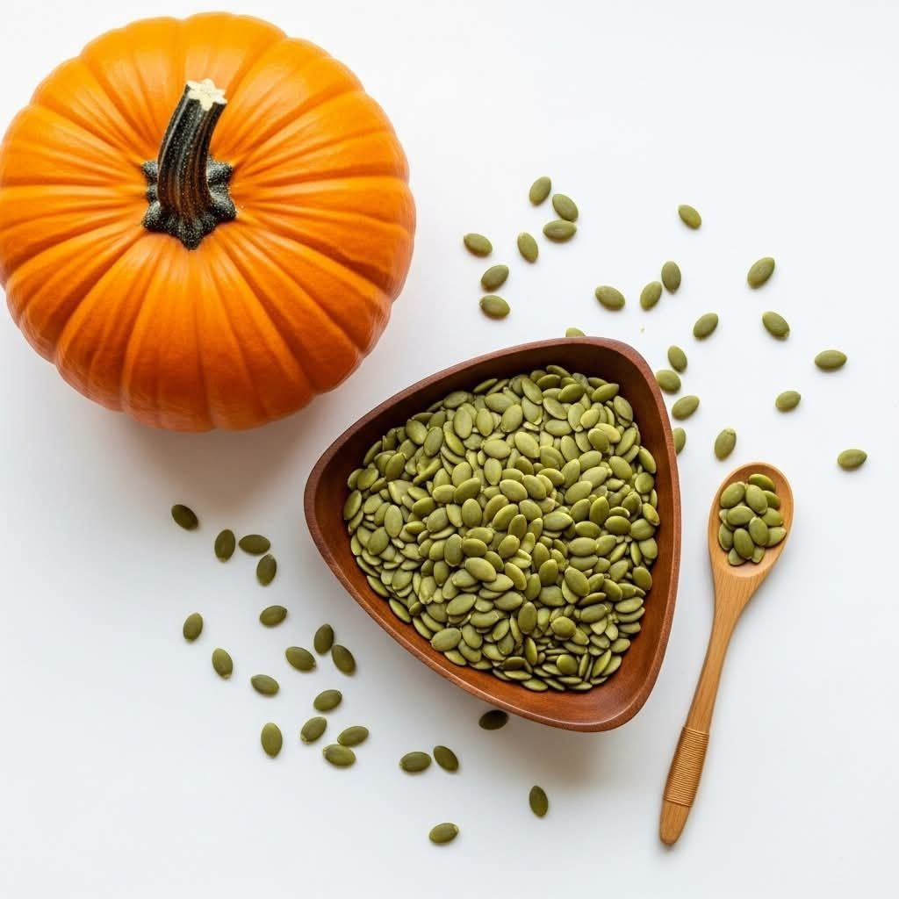

Organic fruits are grown using natural and sustainable farming practices that respect both human health and the environment. Free from synthetic pesticides, chemical fertilizers, and GMOs, these fruits are cultivated using organic compost and eco-friendly techniques. By choosing organic fruits, you enjoy fresh, nutritious produce closer to nature. Organic farming enhances flavor while preserving soil fertility and biodiversity. Our organic fruits are carefully sourced to ensure the highest standards of freshness, purity, and taste.Read more

Organic vegetables are cultivated using sustainable practices without synthetic pesticides or chemical fertilizers. Farmers use compost, crop rotation, and natural pest control methods. Choosing organic supports a healthier food system, reduces pollution, and improves soil quality. These vegetables are fresher, more flavorful, and harvested at peak ripeness. Our vegetables are carefully sourced to provide high-quality, nutritious options for your meals.Read more


Fresh and juicy organic apples, perfect for smoothies and snacks.

Rich and sweet organic mangoes, perfect for smoothies and desserts.

Delicious organic grapes, perfect for snacking and wine making.

Delicious and nutritious organic sweet corn, perfect for grilling and salads.

Delicious and nutritious organic sweet potatoes, perfect for roasting and mashing.

Delicious and nutritious organic pumpkins, perfect for soups and baking.